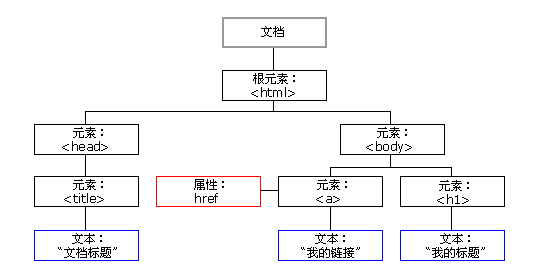

DOM是文档对象模型（Document Object Model），在页面加载时浏览器会自动创建。HTML DOM 模型被构造为对象的树。如图：

HTML 文档中的所有节点组成了一个文档树（或节点树）。HTML 文档中的每个元素、属性、文本等都代表着树中的一个节点。树起始于文档节点，并由此继续伸出枝条，直到处于这棵树最低级别的所有文本节点为止。
注：元素节点包含属性节点和文本节点。
通过可编程的对象模型，JavaScript 可以创建动态的 HTML；改变页面中的所有 HTML 元素、 HTML 属性、CSS 样式以及能够对页面中的所有事件做出反应。
– 1. document.getElementById(“id”);
– 2. document.getElementsByName(“name”);
– 3. document.getElementsByTagName(“tagName”);
– 引用子节点
• childNodes、firstChild、lastChild
– 引用父节点
• parentNode
– 引用兄弟节点
• element.nextSibling; （下一个兄弟节点）
• element.previousSibling; （上一个兄弟节点）
• 如果该结点没有相应的兄弟结点，则返回null
1.通过对象“.”属性，来操作属性
优点：可以动态获取用户修改的属性值
缺点：不能获取自定义属性的值
2.getAttribute("key") setAttribute("key","value") removeAttribute("key")
优点：可以获取自定义属性的值
缺点：不能动态获取用户修改的属性值
1. 通过对象.innerText 获取节点内的文本信息（不包含HTML代码）
2. 通过对象.innerHTML 获取节点内的所有内容（包含HTML代码）
1.创建一个节点对象
document.createElement("标签名")
2.在父结点中追加一个子节点对象
fatherNode.appendChild(子节点对象)
3.在父结点中的指定节点前添加子节点
fatherNode.insertBefore(新节点对象，参考节点对象)
4.在父节点中用一个新的子节点替换旧的子节点对象
fatherNode.replaceChild(新节点对象，旧节点对象)
5.在父节点中删除一个指定子结点对象
fahterNode.removeChild(子结点对象)
1.可以通过对象.style属性操作对象的css样式。需注意：双单词或多单词的属性（）改写为骆峰写法，即样式名称中有“-”将“-”去掉，并将“-”后一个字母改为大写来作为样式的新名称。
2.需要动态为一个对象添加一个class样式时，添加属性名是className，而并非class（class是js的关键字，并能作为属性名存在）